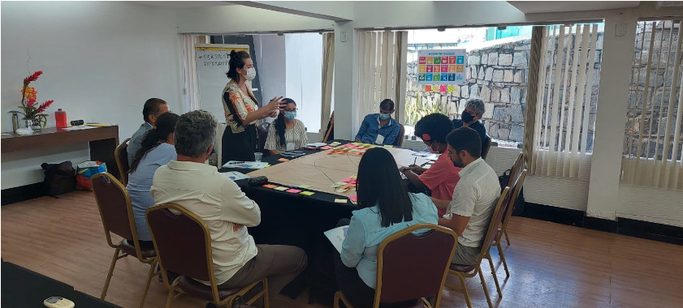

Campina Grande-PB e municípios ao entorno
Esta oficina ocorreu de 26 de abril até 27 de Abril de 2022.
Um total de 25 colaboradores participaram do evento, que abrangeu 27 municípios.
Descrição:
Setor Privado - Empresas, consultorias, Associações representando setor privadoGoverno - Executivo, Legislativo ou Judiciário
Sociedade Civil - ONGs, Movimentos sociais, Associações, etc.
Academia - Institutos de Pesquisa Públicas/Privadas e universidades
